11 tiendas rebrandeadas hasta el momento, entre ellas Trujillo, Chimbote, Chiclayo y Piura; abajo, la apertura de la tienda Primavera. Llevo el proyecto de principio a fin: medición de los locales, diseño de interiores y brandeo (fachadas, vitrinas, muros, señalética, caja), coordinación con proveedores desde la cotización hasta la implementación, supervisión de obra y aprobación final.
NoravesTienda Primavera — día de apertura
NoravesTienda Primavera — zona de caja
NoravesTienda Primavera — publicidad de apertura
NoravesFachada en esquina — propuesta
NoravesVitrina «¡Hey, Caserito!»
NoravesFachada lateral «Pollo fresco y jugoso»
NoravesMuro «¿Qué vamos a preparar hoy?» y afiches
NoravesMuro tipográfico «POLLO»
NoravesMuro con la mascota y QR a redes
NoravesArco «¡Unos huevitos y estamos!» y señalética
NoravesSalida «¡Nos vemos mañana!»
NoravesFranja «¡Hoy se come buenazo!»
Rol: Diseño de interiores y branding retail — Medición, coordinación con proveedores, supervisión y aprobación
Retail / Afiches A4
Noraves — Afiches de precio para tiendas
Serie de afiches A4 para los puntos de venta Noraves, de la idea a la diagramación: un sistema reutilizable con cartel de precio para completar en tienda, una frase por producto, fotografía de comida, octógonos de advertencia y textos legales. La serie incluye también un afiche informativo para clientes sobre la Ley N.º 30884 (bolsas plásticas).
NoravesLomito de pollo
NoravesPollo Superior
NoravesHamburguesa premium de pollo
NoravesFiletillo de pollo
NoravesPollo sabor a la Brasa — precio de lanzamiento
NoravesAlitas Bouchet
NoravesPollada criolla
NoravesAlitas korean BBQ picante
NoravesMilanesa
NoravesSuprema
NoravesAviso a clientes — Ley N.º 30884
Rol: Ideación, diseño y diagramación
Retail / Afiches 50 × 70 cm
Noraves — Afiches gran formato
Afiches de 50 × 70 cm para las tiendas Noraves, de la idea a la diagramación: lanzamientos de producto (Pollo sabor a la Brasa, Pollo Superior con menudencia), edición navideña del Gran Pollo Superior y piezas de ambientación «¡Listos para preparar!», destacando el empaque y la fotografía de comida.
NoravesGran Pollo Superior — edición Navidad
NoravesPollo Superior con menudencia
NoravesPollo sabor a la Brasa — «sin salir de casa»
Noraves¡Listos para preparar! — Alitas y Suprema
NoravesChicharrón de pollo
NoravesVenta interna Grupo Rocío — Pollo sabor a la Brasa
Rol: Ideación, diseño y diagramación
Branding / Packaging
Noraves — Etiqueta universal y mockups de packaging
Etiqueta universal «¡Listos para preparar!» diseñada para toda la línea de productos preparados Noraves (bolsas al vacío y bandejas), presentada en mockups fotorrealistas, junto con la etiqueta de la edición navideña. También supervisé la impresión validando colores y diseño.
NoravesEtiqueta universal «¡Listos para preparar!»
NoravesMockup — Pollada criolla
NoravesMockup — Chicharrón de pollo
NoravesMockup — Hamburguesa premium
NoravesMockup — Alitas Bouchet
NoravesMockup — Milanesa
NoravesMockup — Nuggets
NoravesMockup — Alitas korean BBQ
NoravesMockup — Suprema
NoravesPollo Navideño — edición Navidad
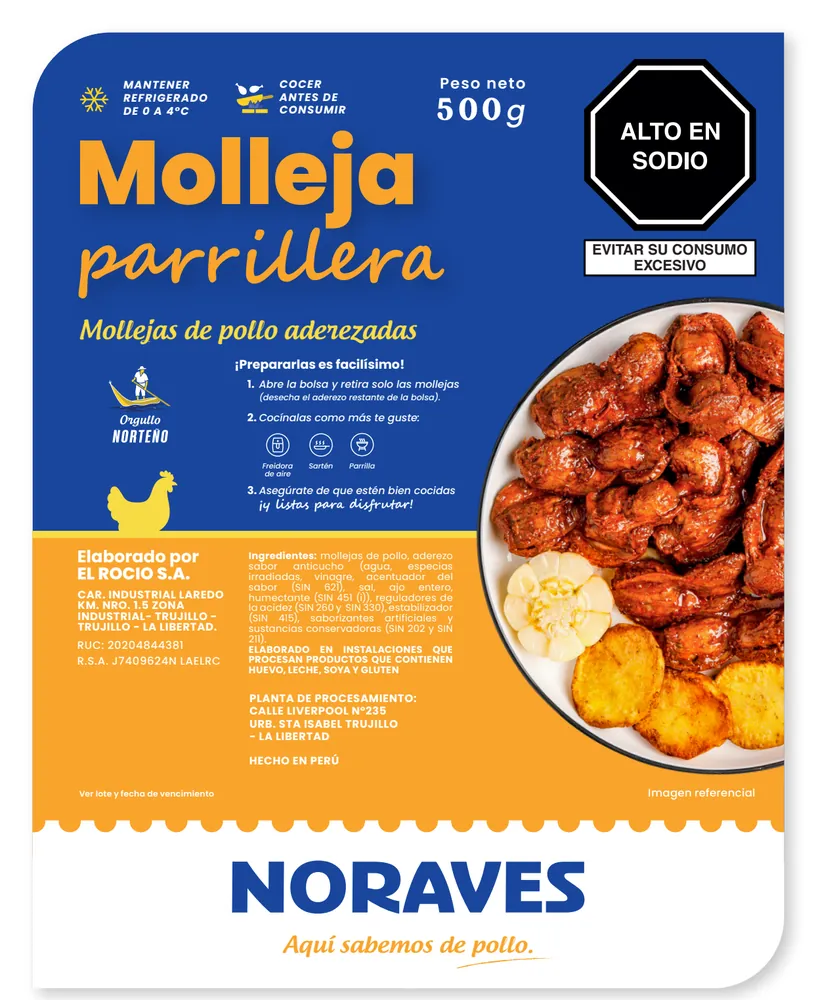
NoravesMolleja parrillera
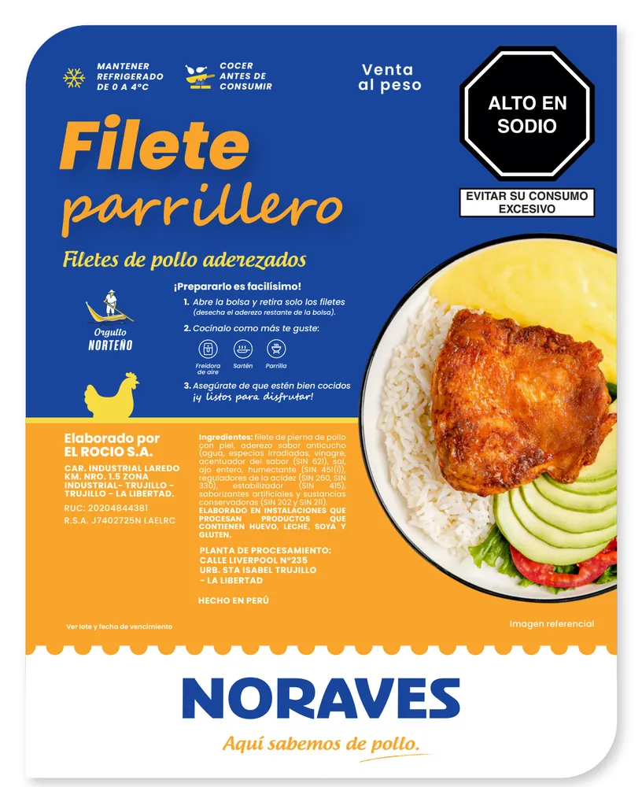
NoravesFilete parrillero
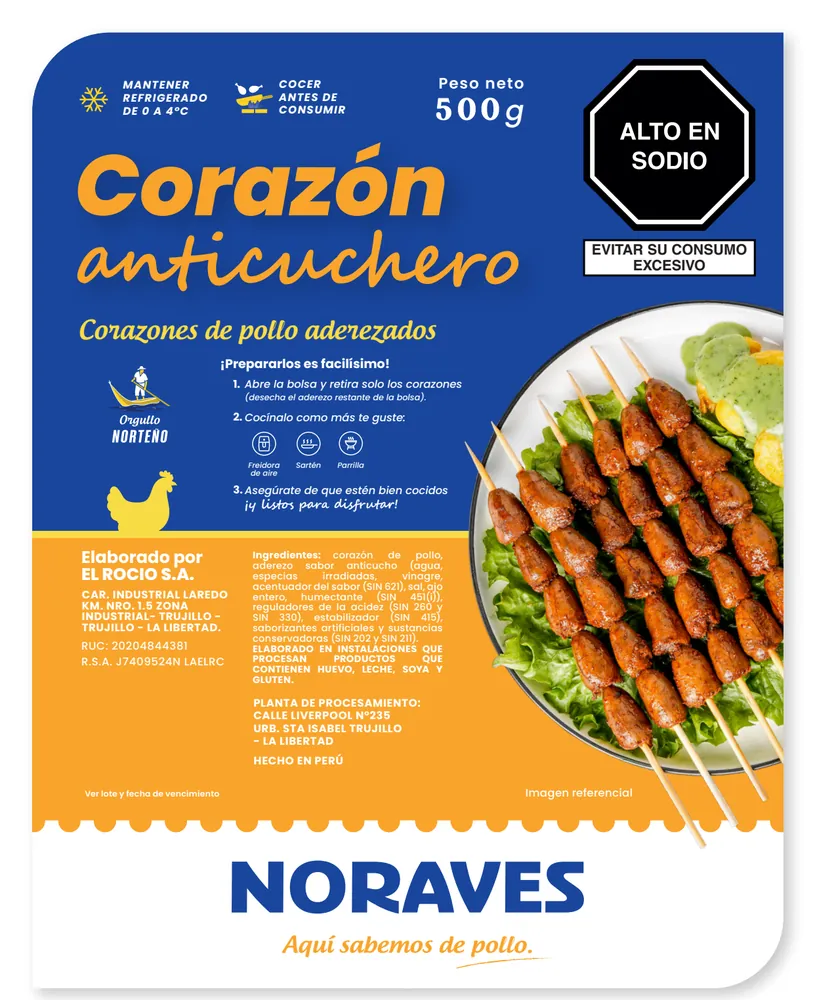
NoravesCorazón anticuchero
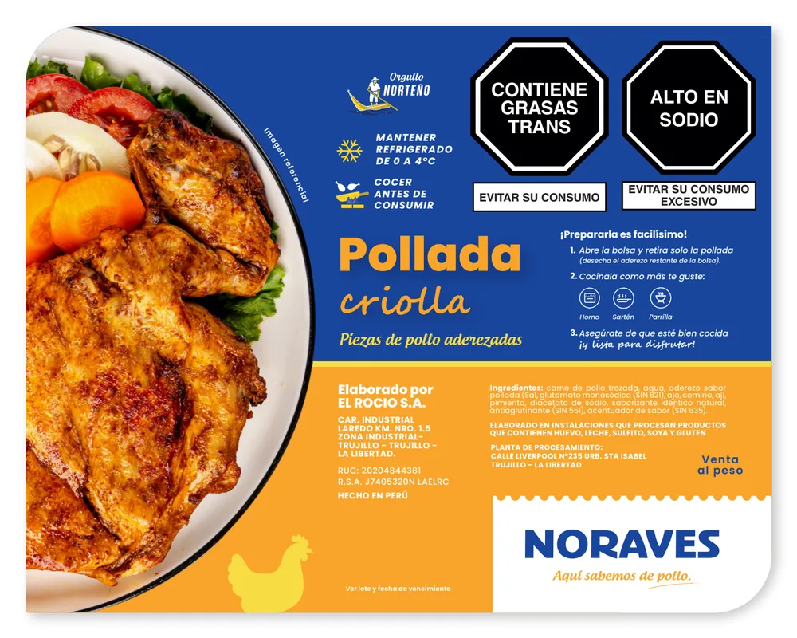
NoravesPollada criolla
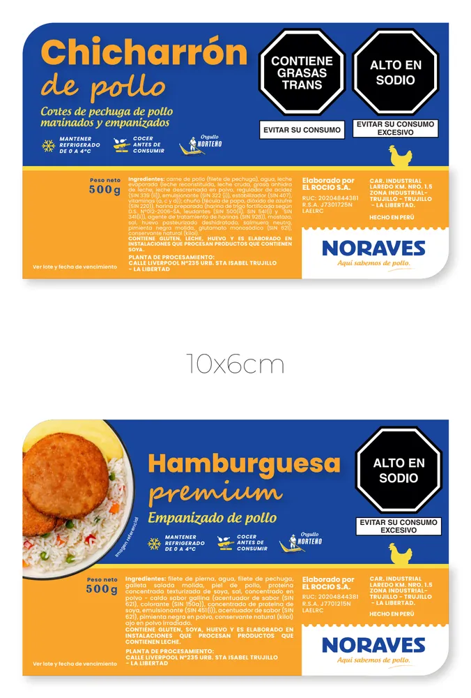
NoravesChicharrón y Hamburguesa premium
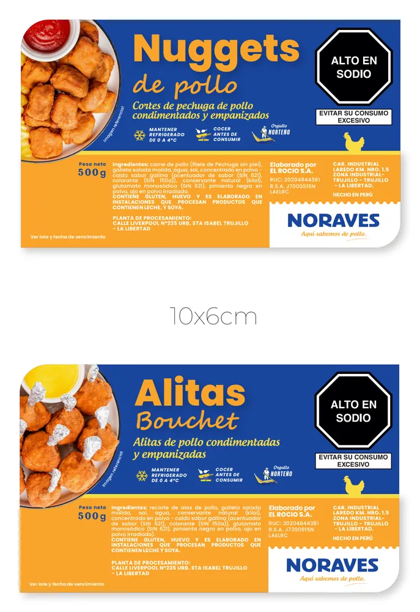
NoravesNuggets y Alitas Bouchet
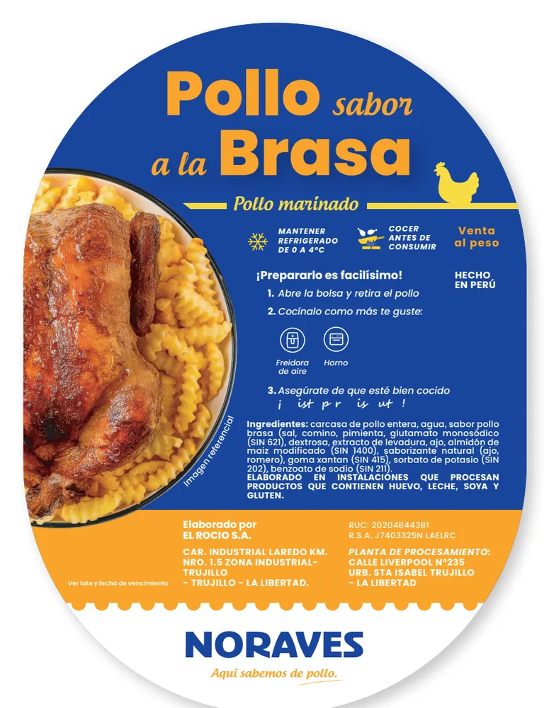
NoravesPollo sabor a la Brasa
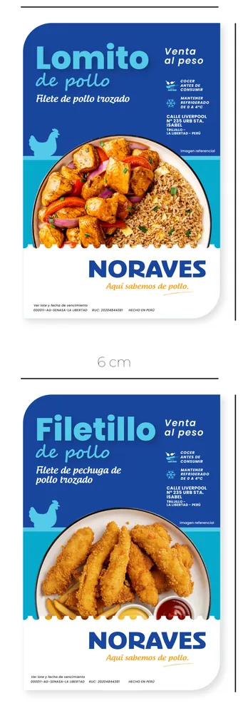
NoravesLomito y Filetillo
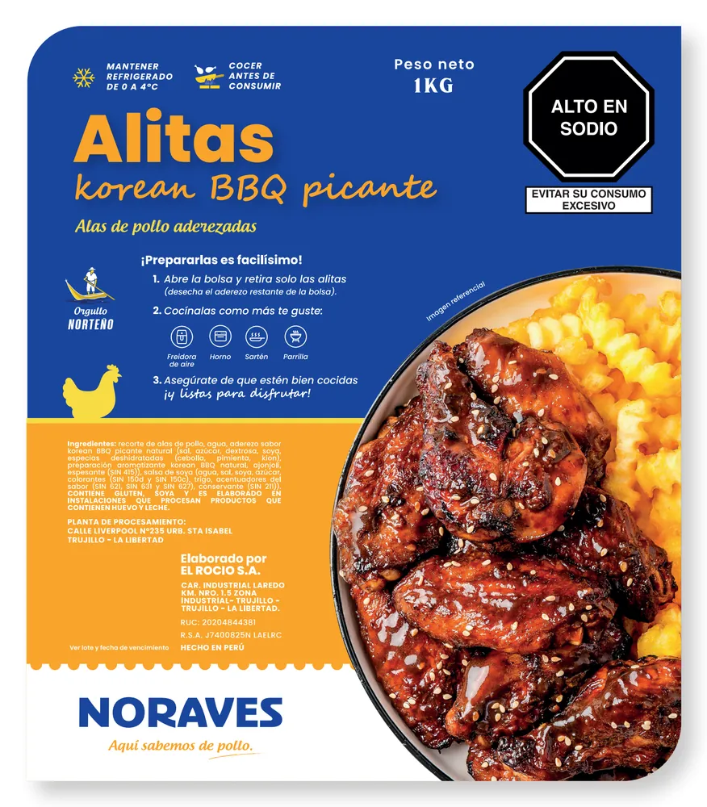
NoravesAlitas korean BBQ picante
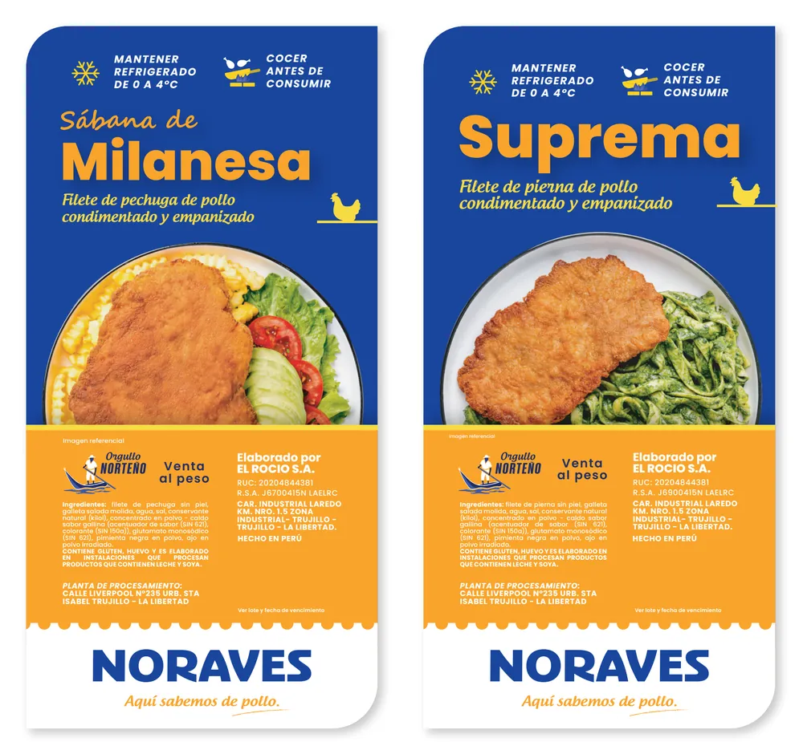
NoravesSábana de Milanesa y Suprema
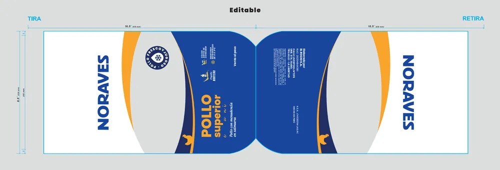
NoravesTroquel — bolsa Pollo Superior
Rol: Packaging & Brand Designer — Supervisión de impresión
Branding / Aplicaciones y merchandising
Agrovision — Kit «Orgullo Agrovision»
Aplicación de la identidad «Orgullo Agrovision» («Transformando tierras, transformando vidas») en piezas físicas: cuadernos, certificado, cajas de regalo, botella, papel de regalo y tarjetas.
AgrovisionCuaderno anillado — fondo verde
AgrovisionCuaderno anillado — fondo claro
AgrovisionCertificado con folder
AgrovisionLibreta con elástico
AgrovisionCaja de regalo abierta
AgrovisionCaja de regalo cerrada
AgrovisionBotella personalizada
AgrovisionPapel de regalo y etiqueta
AgrovisionTarjetas de saludo
Rol: Brand & Graphic Designer
Branding / Campaña interna
Agrovision — Campaña «Valores con Visión»
Piezas de la campaña interna «Valores con Visión»: merchandising, dinámicas de activación y elementos de ambientación con los colores de los valores de la empresa.
AgrovisionLlavero
AgrovisionLápices
AgrovisionPop Socket
AgrovisionBlock de notas
AgrovisionLanyard
AgrovisionBolsa ecológica
AgrovisionRuleta
AgrovisionStand
AgrovisionFiltro
AgrovisionBackdrop
AgrovisionPuff
Rol: Diseñador gráfico — Branding y piezas físicas (cliente vía Mayu Comunicaciones)
Branding / Manual de identidad
Sermeind — Rebranding y manual de identidad
Rediseño de la identidad visual de Sermeind (fabricaciones industriales) y manual de uso: logo, tipografía, colores, versiones, usos incorrectos y aplicaciones (ropa, gorra, casco).
Daniela y Rodrigo — Invitación de boda interactiva
Web de invitación diseñada y desarrollada de principio a fin: un libro que se abre para contar la historia de la pareja, cuenta regresiva, ceremonia y recepción, código de vestimenta, mesa de regalos y confirmación de asistencia (RSVP), con música de fondo y versión móvil.
Del diseño de la interfaz a la maquetación: HTML, CSS y JavaScript, imágenes optimizadas en WebP, visor a pantalla completa con zoom, reproducción de video integrada y diseño adaptado a móvil y escritorio.
Motion design / Showreel
Showreel — Mi portafolio anterior
Una selección de proyectos de branding, animación 2D y motion design anteriores a mis trabajos actuales, reunidos en un solo video.
Rol: Diseñador gráfico y motion designer
Noraves
Motion graphics y video
Noraves — Suprema
Video vertical que destaca el producto "Suprema", pensado para Instagram Reels y TikTok.
Cliente: Noraves Rol: Motion designer y editor de video
Motion graphics y video
Noraves — Pollo edición Navidad
Video de campaña navideña que celebra el producto estrella alrededor de una cena de fiesta.
Cliente: Noraves Rol: Motion designer y editor de video
Motion graphics y video
Noraves — Alitas Bouchet
Video vertical dedicado a la línea de alitas de pollo "Bouchet".
Cliente: Noraves Rol: Motion designer y editor de video
Motion graphics y video — Otras campañas
Noraves — Otros videos
Selección adicional de videos de campaña, reunidos aquí para ahorrar espacio.
NoravesVideo de presentación
NoravesSabor a la Brasa
NoravesExperto en calidad
NoravesCampaña Día de la Madre
NoravesCampaña Mundial
NoravesCampaña Fiestas Patrias
NoravesAdivina quién llegó
NoravesPromo nueva tienda
Cliente: Noraves Rol: Motion designer y editor de video
IA generativa / Video
Grupo El Rocío — La tienda en video, creada con IA
Video realizado con IA generativa a partir de fotos que yo mismo tomé en la tienda: desde la sesión en el local hasta la animación de las imágenes.
Rol: Fotografía y video generado con IA
Yawi
Motion graphics y video
Yawi — Agritracer Neo
Video animado en 2D que presenta la aplicación Agritracer NEO de Yawi.
Cliente: Yawi Rol: Motion designer y editor de video
Motion graphics y animación 2D
Yawi — Escenas de animación 2D (Agritracer NEO)
Escenas ilustradas para un video animado 2D que presenta la aplicación Agritracer NEO de Yawi: personajes, fondos de campo y secuencias de demostración.
YawiEscena 1 / 16
YawiEscena 2 / 16
YawiEscena 3 / 16
YawiEscena 4 / 16
YawiEscena 5 / 16
YawiEscena 6 / 16
YawiEscena 7 / 16
YawiEscena 8 / 16
YawiEscena 9 / 16
YawiEscena 10 / 16
YawiEscena 11 / 16
YawiEscena 12 / 16
YawiEscena 13 / 16
YawiEscena 14 / 16
YawiEscena 15 / 16
YawiEscena 16 / 16
Rol: Ilustrador y animador 2D
Hortifrut Olmos
Motion graphics y video
Hortifrut Olmos — Videos
Selección de videos realizados para Hortifrut Olmos: Fútbol Más, Yo Seguro y Ping Pong.
Hortifrut OlmosFútbol Más
Hortifrut OlmosYo Seguro
Hortifrut OlmosPing Pong
Rol: Motion designer y editor de video
Danper
Motion graphics y video
Danper — Proceso de Mejora
Video «Proceso de Mejora» realizado para Danper.
Cliente: Danper Rol: Motion designer y editor de video
Mission
Motion graphics y video
Mission — Videos
Videos realizados para Mission: «Cuenta Bancaria» (formato horizontal) y «Valores» (Short vertical).
MissionCuenta Bancaria
MissionValores (Short)
Rol: Motion designer y editor de video
EducaD
Motion graphics y video
EducaD — Videos
Videos realizados para EducaD: invitación por su 40.º aniversario, seguridad y salud en el trabajo (SST), homenaje «Legado Docente» e intro de marca.
EducaDInvitación 40.º aniversario
EducaDSST — seguridad y salud en el trabajo
EducaDLegado Docente
EducaDIntro
Rol: Motion designer y editor de video
Dulce y Salado
Motion graphics y Shorts
Dulce y Salado — Shorts
Shorts verticales para las redes sociales de Dulce y Salado: Torta Helada, Dulce o Salado, Visítanos y Torta de Chocolate.
Dulce y SaladoTorta Helada
Dulce y SaladoDulce o Salado
Dulce y SaladoVisítanos
Dulce y SaladoTorta de Chocolate
Rol: Motion designer y editor de video
Redes sociales / Carrusel — CAR01
Noraves — Carrusel "Recetas del Día"
Secuencia de 6 piezas pensadas para deslizar, alineadas con la identidad de marca.
Noraves
Noraves
Noraves
Noraves
Noraves
Noraves
Rol: Content & Social Media Designer
Redes sociales / Carrusel — CAR02
Noraves — Carrusel «¡Gol!»
Secuencia de 4 piezas pensadas para deslizar, alineadas con la identidad de marca.
Noraves
Noraves
Noraves
Noraves
Rol: Content & Social Media Designer
Redes sociales / Carrusel — CAR03
Noraves — Carrusel «Los Seleccionados de Papá»
Secuencia de 3 piezas pensadas para deslizar, alineadas con la identidad de marca.
Noraves
Noraves
Noraves
Rol: Content & Social Media Designer
Redes sociales / Carrusel — CAR06
Noraves — Carrusel «Este 2025 nos enseñó»
Secuencia de 6 piezas pensadas para deslizar, alineadas con la identidad de marca.
Noraves
Noraves
Noraves
Noraves
Noraves
Noraves
Rol: Content & Social Media Designer
Redes sociales / Carrusel — CAR07
Noraves — Carrusel «La Primavera»
Campaña de temporada en 4 piezas para deslizar: tres recetas con pollo y una firma de marca.
NoravesLa Primavera — Pollo al horno
NoravesPalta rellena de pollo
NoravesHuevitos rellenos de pollo
NoravesFirma «Aquí sabemos de pollo»
Rol: Content & Social Media Designer
Redes sociales / Posts
Noraves — Publicaciones de Instagram
Posts en formato vertical 1080x1350, presentados en fila para comparar el estilo visual.
Noraves
Noraves
Noraves
Noraves
Noraves
Noraves
Noraves
Noraves
Noraves
Noraves
Noraves
Rol: Content & Social Media Designer
Redes sociales / Comunicación interna
Hortifrut Olmos — Piezas de comunicación
Diseño de piezas para la comunicación interna y las redes sociales de una agroexportadora de arándanos: anuncios, campañas de sensibilización y fechas conmemorativas.
Hortifrut OlmosBono escalonado según kilos cosechados
Hortifrut OlmosBono de calidad T25-26 + contactos de reclutamiento
Hortifrut OlmosBono «Reventonazo» — S/500 netos
Hortifrut OlmosDía Internacional de la Energía Limpia
Hortifrut OlmosDía Internacional de la Aduana
Hortifrut OlmosDía Mundial de la Depresión
Hortifrut OlmosCampaña de donación de libros para la biblioteca HFE
Hortifrut OlmosResultados del voluntariado HFE 2024
Hortifrut OlmosSorteo de canastas
Hortifrut Olmos490.º aniversario de la fundación de Trujillo
Hortifrut Olmos490.º aniversario de Trujillo (variante)
Hortifrut OlmosBono extremo para los equipos de Packing
Hortifrut OlmosBono por asistencia perfecta quincenal
Rol: Diseñador gráfico — Comunicación interna y redes sociales
Redes sociales / Carrusel
Hortifrut Olmos — Carrusel «Hostigamiento sexual laboral»
Carrusel de sensibilización de 5 slides para el día de lucha contra el hostigamiento sexual laboral: cifras clave, marco legal y canales de ayuda.
Hortifrut OlmosHostigamiento sexual laboral — Portada
Hortifrut OlmosHostigamiento sexual laboral — Cifras clave
Hortifrut OlmosHostigamiento sexual laboral — Marco legal
Hortifrut OlmosHostigamiento sexual laboral — Comité HFE en acción
Hortifrut OlmosHostigamiento sexual laboral — Línea de ayuda 1819
Rol: Diseñador gráfico — Comunicación interna y redes sociales
Redes sociales / Carrusel
Hortifrut Olmos — Carrusel «Día Mundial del Clima»
Carrusel de 4 slides para el Día Mundial del Clima: diagnóstico, marco institucional y gestos cotidianos.
Hortifrut OlmosDía del Clima — Portada
Hortifrut OlmosDía del Clima — Cambio inminente
Hortifrut OlmosDía del Clima — Gestos cotidianos
Hortifrut OlmosDía del Clima — Nuestras acciones cuentan
Rol: Diseñador gráfico — Comunicación interna y redes sociales
Redes sociales / Comunicación interna
Agrovision — Piezas de comunicación (vía Mayu Comunicaciones)
Diseño de piezas de reclutamiento y comunicación interna para Agrovision (en co-branding con su socio Arena Verde): campañas de temporada, beneficios laborales y seguridad vial, realizadas durante mi paso por la agencia Mayu Comunicaciones.
AgrovisionCampaña Mundial — «Prometo que...»
AgrovisionCuenta regresiva de reclutamiento — Falta 1 día
AgrovisionEl 98 % de colaboradores destaca el mejor trato
AgrovisionCuenta regresiva de reclutamiento — Hoy
AgrovisionPrincipales beneficios de trabajar en Agrovision
AgrovisionLa mejor calidad y cantidad de fruta del valle
AgrovisionPago correcto y puntual cada 14 días
AgrovisionTodos los beneficios de ley desde el primer día
AgrovisionSeguimiento diario de puntos de rendimiento
AgrovisionSeguro complementario de trabajo de riesgo
Agrovision«Cumplimos lo que prometemos» — testimonios de campo
Agrovision5 reglas clave de seguridad vial (#TransportistasAgrovision)
AgrovisionCorrecto / incorrecto — manejar sin descanso (#TransportistasAgrovision)
AgrovisionMensaje de agradecimiento — Clasificación Qatar 2022
AgrovisionCampaña «Estrella de la cosecha»
Rol: Diseñador gráfico — Comunicación interna y redes sociales (cliente vía Mayu Comunicaciones)
Redes sociales / Sensibilización
Danper — Igualdad y prevención de la violencia de género
Campañas de sensibilización sobre igualdad y prevención de la violencia de género: protocolo de ayuda, datos clave y compromiso de la empresa.
DanperA dónde acudir en caso de violencia
DanperViolencia de género contra las mujeres
DanperCompromiso por un país equitativo
Rol: Diseñador gráfico — Comunicación interna y redes sociales (cliente vía Mayu Comunicaciones)
Redes sociales / Salud y bienestar
Danper — Salud y bienestar de colaboradores
Piezas de salud para colaboradores y sus familias: día de la pediatría, alimentación de la gestante y difusión de servicios de salud gratuitos.
DanperDía de la Pediatría — versión azul
DanperDía de la Pediatría — versión clara
DanperInfografía: alimentación de la gestante
DanperSalud — servicios de salud gratuitos (v1)
DanperSalud — servicios de salud gratuitos (v2)
DanperSalud — servicios de salud gratuitos (v3)
DanperSalud — versión para buses de transporte
DanperSalud — testimonio de un colaborador
Rol: Diseñador gráfico — Comunicación interna y redes sociales (cliente vía Mayu Comunicaciones)
Redes sociales / Eventos
Danper — Eventos y vida interna
Piezas para eventos y actividades internas: aniversario de Arequipa, concurso de dibujo, campaña dominical, torneo deportivo e invitación a un taller de prevención.
DanperAniversario de Arequipa — 15 de agosto
DanperConcurso de dibujo para niños
DanperCampaña «Domingo Regalón»
DanperTorneo deportivo «Talento en la Cancha»
DanperInvitación — taller de prevención para brigadistas
Rol: Diseñador gráfico — Comunicación interna y redes sociales (cliente vía Mayu Comunicaciones)
Redes sociales / Comunicación interna
Mission — Comunicación interna
Piezas de comunicación interna: campaña de afiliación al seguro de salud, código de ética y conducta, y agradecimiento a los auditores internos de calidad.
MissionCampaña de afiliación a EsSalud
MissionCódigo de ética y conducta
MissionAgradecimiento a los auditores internos de calidad
Rol: Diseñador gráfico — Comunicación interna y redes sociales
Redes sociales / Publicaciones
Yawi — Publicaciones en redes sociales
Piezas para las redes sociales de Yawi: fecha conmemorativa del sector agrícola y anuncio de la llegada de la marca a Facebook.
YawiDía del Ingeniero Agrónomo
YawiAnuncio — Yawi llega a Facebook
Rol: Diseñador gráfico — Comunicación interna y redes sociales
Fotografía / Dirección de arte
Noraves — Sesión de fotografía gastronómica
Sesión de fotografía gastronómica para la línea Noraves. No estuve detrás de la cámara: asistí, orienté y supervisé la sesión, analicé las tomas crudas y le di correcciones al fotógrafo, y definí las directivas de revelado para lograr colores naturales, sin saturación artificial.
NoravesAnticuchos de corazón
NoravesPollo a la brasa con huancaína
NoravesArroz con pollo
NoravesEstofado de pollo
NoravesMilanesa con tallarines verdes
NoravesMilanesa con papas
NoravesChicharrón de pollo
NoravesNuggets con papas
NoravesPollo en salsa BBQ
Rol: Dirección de arte y supervisión de la sesión y el revelado
Fotografía y retoque
Mi trabajo fotográfico está en Instagram
Fotografía de estudio, iluminación, composición y retoque de producto: encuentra mis fotos en mi cuenta @poder_visual.
Diseñador multidisciplinario: combino creación visual, motion design, estrategia de marca e inteligencia artificial integrada en el proceso creativo.
Doble perfil: creatividad y visión de negocio
Formado en diseño gráfico en Perú (carrera de 3 años) y titulado con un BTS en Comercio Internacional en Neuilly-sur-Seine, donde viví 6 años, domino el idioma francés y la cultura empresarial francesa.
Un flujo de trabajo potenciado con IA
Integro la IA generativa (prompt engineering, generación de imágenes y videos animados) en mi flujo de trabajo para optimizar la producción, con resultados elegantes, realistas y profesionales, lejos de los clichés artificiales.
Formación y trayectoria
Carrera de diseño gráfico (3 años)ITN - Cibertec, Perú
BTS en Comercio Internacional (2 años)Liceo Español Luis Buñuel, Neuilly-sur-Seine
6 años viviendo en FranciaExperiencia profesional, francés fluido
Formación continuaDomestika cada año: motion design, IA generativa, fotografía
Competencias clave
Brand y motion designIdentidad visual, manual de marca, animación 2D/3D, piezas DOOH y redes sociales
AI-driven designPrompt engineering, generación y retoque de imágenes, videos fotorrealistas
UI/UX y herramientas internasLanding pages, interfaces y sistemas de gestión internos (Supabase)
Redes socialesCarruseles, posts y stories verticales (1080×1350) pensados para generar interacción
Fotografía y retoqueFotografía de estudio, iluminación, composición, postproducción
Producción y negocioSupervisión de producción, cotizaciones con proveedores (impresión/POP), comunicación interna, Meta Ads
Herramientas
After Effects
Premiere Pro
Photoshop
Illustrator
Dreamweaver
Supabase
Inteligencia artificial
ImagenMagnific, Grok
VideoKling, Seedance, Sora, Grok
Estrategia y redacciónClaude, ChatGPT
¿Trabajamosjuntos?
¿Buscas un diseñador multidisciplinario (brand, motion y UI/UX) en remoto para reforzar tu equipo? Escríbeme.